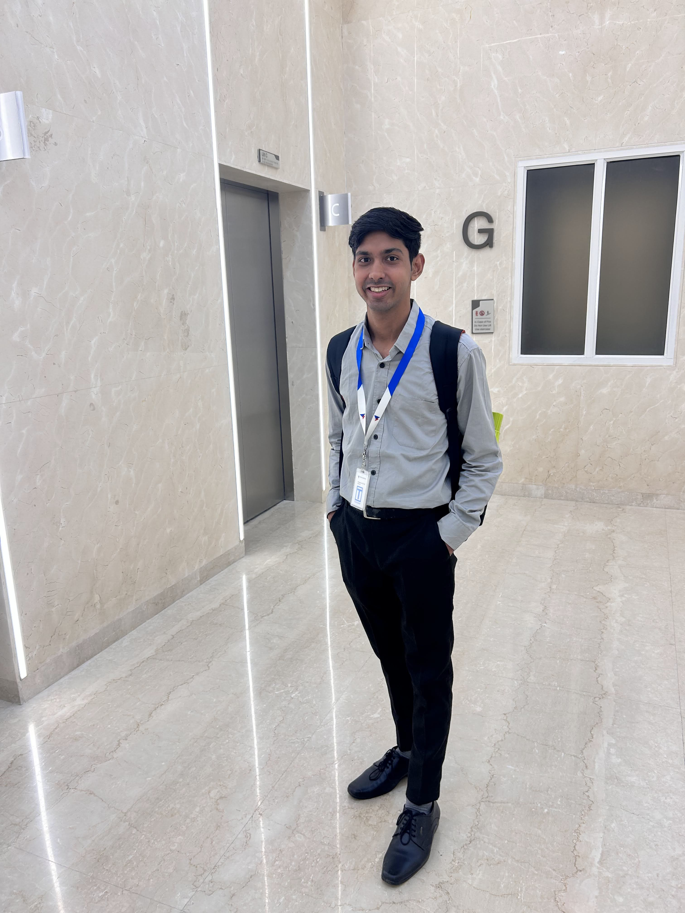

Naval Architect with a Dual Degree in Ocean Engineering & Naval Architecture from IIT Kharagpur, with experience in hydrodynamics, mooring and anchoring, offshore analysis, marine risers, and floating energy systems.

From building fundamentals at IIT Kharagpur to offshore analysis, computational research, and real-world floating-system engineering.
Dual Degree in Ocean Engineering & Naval Architecture, building strong foundations in hydrodynamics, marine structures, offshore engineering and computational methods.
Gained practical engineering exposure through internships at IIT Kharagpur and TechnipFMC, including vessel analysis and dynamic marine-riser simulations using OrcaFlex.
Investigated vortex-induced vibration of flexible marine risers using CFD and fluid–structure interaction, developing expertise in computational marine engineering.
Naval Architect in R&D working on floating solar systems through hydrodynamics, mooring and anchoring analysis, automation, technical validation and new design development.
My work combines marine engineering fundamentals, numerical analysis, computational tools, and offshore system design.
CFD, hydrostatic and hydrodynamic analysis of floating systems using ANSYS Fluent, Maxsurf and ANSYS AQWA.
Station-keeping analysis using OrcaFlex, including wind, wave and current loading, line tensions, excursions and anchoring configurations.
Experience with marine risers, offshore structures and dynamic analysis, including static and dynamic OrcaFlex simulations.
Engineering automation and analysis workflows using Python, VBA, AutoLISP, OrcaFlex Python API and OrcaWave data extraction.
Selected engineering, research and automation work spanning offshore analysis, floating systems and computational engineering.
Station-keeping analysis of floating solar islands using OrcaFlex under wind, wave and current loading. Evaluated mooring configurations, line tensions, excursions and anchoring behaviour across site-specific load cases.
Evaluated wind and hydrodynamic loads for floating solar structures using CFD, hydrostatic and hydrodynamic analysis to support structural and mooring design decisions.
Investigated elastic mooring concepts for floating solar platforms exposed to significant water-level variations, with the objective of improving station keeping and platform stability.
Developed Python-based engineering workflows using the OrcaFlex Python API to automate extraction of wave-induced pressure data from OrcaWave frequency-domain and OrcaFlex time-domain analyses.
Investigated vortex-induced vibration of flexible marine risers through CFD and fluid–structure interaction, using large-scale computational simulations to study riser response and VIV behaviour.
Developed automation tools for repetitive engineering workflows, including steel-section property extraction, mooring coordinate generation and CAD automation, reducing manual calculation and drafting effort.
Explore my projects, research, engineering journey, and experience in Ocean and Offshore Engineering.
Get in Touch